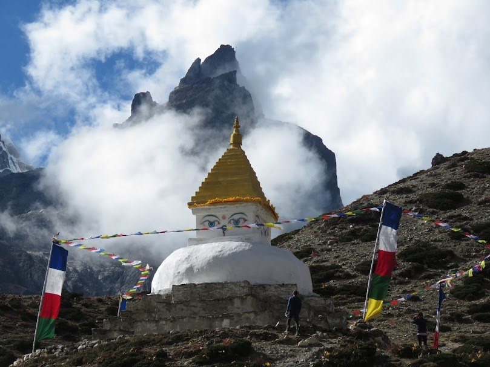
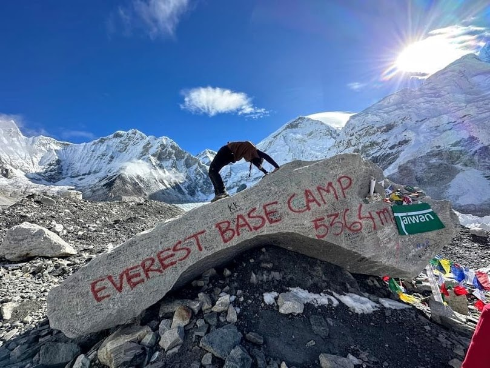
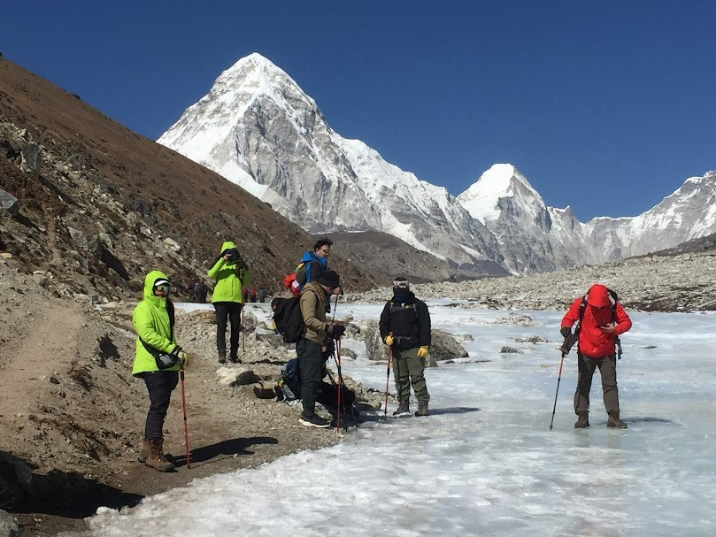

Best Time for Everest Base Camp Trek
Worldwide, adventure seekers and trekking enthusiasts dream of completing this incredible world highest Mt Everest Base Camp journey. For manyadventures lovers, reaching the destination is a lifelong goal, and they often wonder how to prepare for and successfully complete the trek. To successfully complete the Everest Base Camp Trek, you need proper planning, complete information, and an experienced local Sherpa guide. That's why Nepal Unique Treks has carefully collected all the essential information to help you prepare with confidence and manage your time effectively. Start planning your Everest adventure today and trek later with our experienced Sherpa guides, who will ensure a safe, enjoyable, and unforgettable journey to the base of the world's highest mountain.
Planning an Everest Base Camp Trek starts with one decision that shapes everything else, when to go.? The Everest Region Trekking sees four distinct seasons, and each one changes the weather, the mountain views, the trail conditions, and even how crowded the teahouses will be. Get the timing right, and you'll walk under clear skies with Everest towering in full view. Get it wrong, and you could be stuck in fog, snow, or a delayed Lukla flight. This guide breaks down the best time for the Everest Base Camp Trek month by month, season by season, so you can plan your 2026 or 2027 trek with confidence.

Quick recommendation
- First-time trekkers and photographers: Autumn (late September–November)
- Trekkers who love wildflowers and fewer permits hassles: Spring (March–May)
- Experienced, cold-hardy trekkers seeking solitude: Winter (December–February)
- Budget travelers who don't mind rain and cloud: Monsoon (June–August), though not generally recommended
Why Choosing the Right Season Matters
The season you choose affects nearly every part of the Everest Base Camp Trek experience
- Weather – Temperature swings between seasons can be extreme, from mild spring days to sub-zero winter nights.
- Mountain views – Clear skies in spring and autumn reveal Everest, Lhotse, Nuptse, and Ama Dablam in full detail; monsoon clouds can hide them for days.
- Flight reliability – The Lukla flight is notoriously weather-dependent, and monsoon and winter storms cause the most delays and cancellations.
- Trail conditions – Snow, ice, and mud all change the difficulty of the trail depending on the month.
- Accommodation availability – Teahouses fill up fast in peak season, so timing affects booking flexibility.
- Crowd levels – Spring and autumn are busiest; winter and monsoon offer a quieter trek.

Best Seasons for Everest Base Camp Trek
Spring (March–May)
Spring is one of the two peak trekking seasons in the Everest Region Trekking, and for good reason.
- Weather: Daytime temperatures are mild and comfortable, generally warming as the season progresses into May.
- Temperature: Expect daytime highs around 10–15°C (50–59°F) at lower elevations, dropping well below freezing at night once you're above Dingboche.
- Rhododendron forests: March and April bring the Khumbu's rhododendron forests into full bloom, turning the lower trail into a corridor of red, pink, and white blossoms.
- Clear skies: Mornings tend to be clear, though afternoon haze and cloud buildup are common as the season warms.
- Climbing season: Spring is also the main Everest expedition season, so you'll likely cross paths with climbing teams and their gear caravans heading to base camp.
- Advantages: Warmer temperatures, blooming scenery, stable trails, good visibility in the mornings.
- Disadvantages: Busier trails and teahouses, afternoon cloud cover, higher prices during peak weeks.
Autumn (September–November)
Autumn is widely considered the best time for the Everest Base Camp Trek, and it's the most popular season by a wide margin.
- Crystal-clear mountain views: After the monsoon rains wash the dust out of the atmosphere, the skies turn consistently clear, offering some of the best mountain visibility of the year.
- Stable weather: Little rainfall, minimal storm risk, and predictable Lukla flights make autumn the most dependable season for planning a fixed itinerary.
- Comfortable temperatures: Daytime highs are pleasant for hiking, while nights are cold but manageable with proper gear.
- Peak trekking season: October in particular is the busiest month on the trail, so book teahouses and permits early.
- Festivals: Autumn overlaps with major Nepali festivals like Dashain, Tihar, and the Sherpa Mani Rimdu festival at Tengboche Monastery often falls in this window.
- Advantages: Best visibility of the year, dry and stable weather, reliable flights, festive cultural atmosphere.
- Disadvantages: Crowded trails and teahouses, higher demand for permits and flights, cooler nights above Dingboche.
Winter (December–February)
Winter is the quiet season in the Khumbu, best suited to trekkers who prioritize solitude over comfort.
Snow-covered landscapes: Namche Bazaar, Tengboche, and the high passes take on a dramatic, snow-covered look that many photographers prefer over the busier autumn crowds.
- Fewer trekkers: Trails and teahouses are noticeably empty, giving a more peaceful, personal experience of the region.
- Cold temperatures: Nighttime temperatures at higher elevations regularly drop well below freezing, and wind chill can make it feel even colder.
- Challenges: Some high-altitude teahouses close for the season, snowfall can occasionally block trails or delay flights, and the cold demands serious gear.
- Who should trek in winter? Experienced trekkers who are comfortable in cold conditions and want a quieter, more contemplative trek. It's generally not recommended for first-timers or anyone sensitive to extreme cold.
Monsoon (June–August)
Monsoon is the least popular season for the Everest Base Camp Trek, mainly due to unpredictable weather.
- Rainfall: Daily rain is common at lower elevations, making trails muddy and slippery.
- Cloud cover: Persistent cloud cover often obscures mountain views for days at a time.
- Lukla flight delays: Monsoon weather causes frequent flight delays and cancellations, so build extra buffer days into your itinerary.
- Lee-side conditions: Because the Khumbu sits partly in the rain shadow of the Himalaya, it receives less rainfall than lower regions of Nepal, and higher elevations can still offer decent trekking windows between showers.
- Pros and cons: Fewer trekkers, lower prices, and lush green scenery are real upsides, but reduced visibility and travel disruptions make monsoon a trek best suited for flexible, adventurous travelers rather than first-timers.
| Month | Avg. Temp (Day/Night) | Visibility | Rainfall | Crowd Level | Recommendation | |
| Janawery | -5°C to 5°C / -15°C to -20°C | Good | Very low | Low | Cold but clear; for experienced trekkers | |
| February | -3°C to 6°C / -12°C to -18°C | Good | Very Low | Low | Improving conditions late month | |
| March | 5°C to 12°C / -8°C to -12°C | Good | Very Low | Moderate | Great start to spring season | |
| April | 8°C to 15°C / -5°C to -10°C | Very good | Low-moderate | High |
| |
| May | 10°C to 17°C / -3°C to -8°C | Moderate (afternoon haze) | Moderate | High | Warm, but pre-monsoon cloud builds | |
| Jun | 12°C to 18°C / 0°C to -5°C | Poor-moderate | High | Low | Early monsoon begins | |
| July |
| Poor | Very high | Very Low | Wettest month; not recommended | |
| August | 12°C to 17°C / 0°C to -5°C | Poor | Very High | Very Low | Still monsoon; muddy trails | |
| September | 10°C to 15°C / -3°C to -8°C | Improving | Moderate | Moderate | Monsoon tapering off | |
| October | 8°C to 14°C / -5°C to -10°C | Excellent | Low | Very high | The single best month for most trekkers | |
| November | 5°C to 12°C / -8°C to -15°C | Excellent | Very low | High | Clear, cold, and stable | |
| December | -2°C to 8°C / -12°C to -18°C | Very good | Very low | Low | Cold but crisp; quieter trails |
Everest Base Camp Temperature by Elevation
Location | Elevation | Typical Daytime Temp | Typical Nighttime Temp |
Lukla | 2,860 m | 10°C to 20°C | 0°C to 8°C |
Namche Bazaar | 3,440 m | 8°C to 16°C | -2°C to 5°C |
Tengboche | 3,860 m | 5°C to 14°C | -5°C to 0°C |
Dingboche | 4,410 m | 3°C to 12°C | -10°C to -3°C |
Lobuche | 4,940 m | 0°C to 8°C | -15°C to -8°C |
Gorakshep | 5,164 m | -2°C to 6°C | -18°C to -10°C |
Everest Base Camp | 5,364 m | -3°C to 5°C | -20°C to -12°C |
Kala Patthar | 5,644 m | -5°C to 3°C | -22°C to -15°C |
Best Time for Different Types of Travelers
- Beginners: Autumn (October–November) offers the most stable weather and best trail conditions, making it the easiest season for a first Everest Base Camp Trek.
- Families: Spring, particularly April, combines mild weather with blooming rhododendrons and slightly less extreme cold at night, making it more comfortable for younger or older trekkers.
- Solo travelers: Autumn is ideal for solo trekkers who want a busier trail with plenty of other hikers and easy-to-find teahouse company. Winter suits solo trekkers seeking solitude and self-reliance.
- Photographers: Late October through November delivers the clearest skies and sharpest mountain views of the year, while winter offers dramatic snow-covered scenes with far fewer people in frame.
- Experienced trekkers: Winter rewards those who are prepared for the cold with empty trails and pristine, snow-covered landscapes.
- Luxury trekkers: Spring and autumn are best, since luxury lodges and premium teahouses operate at full capacity and flights run most reliably during these windows.
- Budget travelers: Monsoon and winter both offer lower teahouse prices and fewer crowds, appealing to trekkers on a tighter budget who can tolerate rain or cold.
Best Time to See Mount Everest Clearly
- Visibility by season: Autumn (October–November) offers the clearest, most consistent mountain views of the year, followed closely by spring mornings before afternoon cloud builds in.
- Sunrise and sunset views: Early morning is almost always the best time to view Everest, regardless of season, since cloud cover typically builds through the day. Kala Patthar at sunrise is the classic viewpoint for the clearest, most dramatic shot of Everest's summit.
- Best photography months: October and November for crisp, contrast-rich mountain shots; December and January for dramatic snow-covered landscapes with fewer people in the frame.

Festivals During Everest Base Camp Trek
- Mani Rimdu Festival: Celebrated at Tengboche Monastery, this Sherpa Buddhist festival typically falls in October or November and features masked dances, rituals, and celebrations that trekkers can witness firsthand.
- Dumji Festival: A Sherpa cultural and religious festival celebrated in villages like Namche Bazaar and Khumjung, usually in June or July, honoring Guru Rinpoche.
- Local Sherpa cultural events: Throughout the year, smaller local ceremonies and gatherings offer trekkers a glimpse into Khumbu's living Buddhist culture, particularly around monasteries in Tengboche, Pangboche, and Thame.
Packing List by Season
- Spring: Lightweight layers, a mid-weight down jacket, sun protection, trekking poles, and a 0°C-rated sleeping bag for higher camps.
- Autumn: Similar to spring, with slightly warmer insulation for November treks; a -10°C to -15°C sleeping bag is recommended for nights above Dingboche.
- Winter: Heavy-duty down jacket, insulated trekking boots, thermal base layers, a -20°C or warmer-rated sleeping bag, and extra hand and foot warmers.
- Monsoon: Waterproof jacket and pants, quick-dry clothing, leech socks for lower elevations, and a dry bag to protect electronics and documents.
Tips for Trekking in Every Season
Altitude sickness prevention: Follow a gradual ascent profile, build in acclimatization days at Namche Bazaar and Dingboche, and never ignore early symptoms like headache or nausea.
- Layering clothing: Regardless of season, a base, mid, and outer layer system lets you adjust quickly to changing temperatures throughout the day.
- Hydration: Drink 3–4 liters of water daily; altitude and dry mountain air increase dehydration risk even when you don't feel thirsty.
- Travel insurance: Choose a policy that covers high-altitude trekking and emergency helicopter evacuation, since standard travel insurance often excludes altitudes above 4,000–5,000 meters.
- Flight flexibility: Build at least one or two buffer days into your itinerary around the Lukla flight, especially if trekking in monsoon or winter, when delays are more common.
- Acclimatization: Stick to the "climb high, sleep low" principle wherever possible, and treat acclimatization days as non-negotiable rather than optional.
Frequently Asked Questions
Which month is best for Everest Base Camp Trek?
October is generally considered the single best month, thanks to stable weather, clear mountain views, and reliable Lukla flights.
Is October better than April?
Both are excellent, but October tends to offer clearer skies and more stable weather, while April brings milder temperatures and blooming rhododendrons. Neither is objectively "better" — it depends on whether you prioritize visibility or warmer conditions.
Can beginners trek Everest Base Camp?
Yes. With good physical preparation, a sensible acclimatization schedule, and ideally a guide, beginners can complete the trek successfully, especially in the more forgiving autumn or spring seasons.
Is winter safe for Everest Base Camp?
Winter can be trekked safely by well-prepared, experienced trekkers with proper cold-weather gear, but it's not typically recommended for first-timers due to extreme cold and some closed teahouses at higher elevations.
Can I trek during monsoon?
Yes, though it's the least recommended season due to rain, mud, poor visibility, and Lukla flight delays. It suits flexible, adventurous trekkers more than those on a tight schedule.
How cold does Everest Base Camp get?
Nighttime temperatures at Everest Base Camp can drop to -12°C to -20°C (10°F to -4°F) even outside of winter, and considerably colder during the winter months.
How many days do I need?
Most itineraries run 12–14 days round trip from Kathmandu, allowing for proper acclimatization; some trekkers extend this to 16 days for a more relaxed pace.
What permits are required?
Trekkers need the Sagarmatha National Park entry permit and the Khumbu Pasang Lhamu Rural Municipality entry permit, both of which can be arranged in Kathmandu or Lukla.
Do I need a guide?
While independent trekking is possible, a licensed guide adds safety, local knowledge, and support with logistics, permits, and altitude monitoring — especially valuable for first-time trekkers.
Which season has the clearest mountain views?
Autumn, particularly late October through November, consistently offers the clearest and most reliable mountain views of the year.
Ready to plan your Everest Base Camp Trek?
Nepal Unique Treks offers guided departures across every season, with experienced local guides and flexible itineraries built around Khumbu's changing weather. Contact us to find the best trekking window for your travel dates.